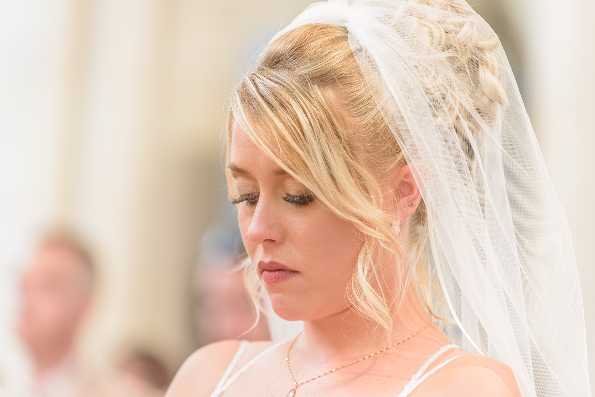
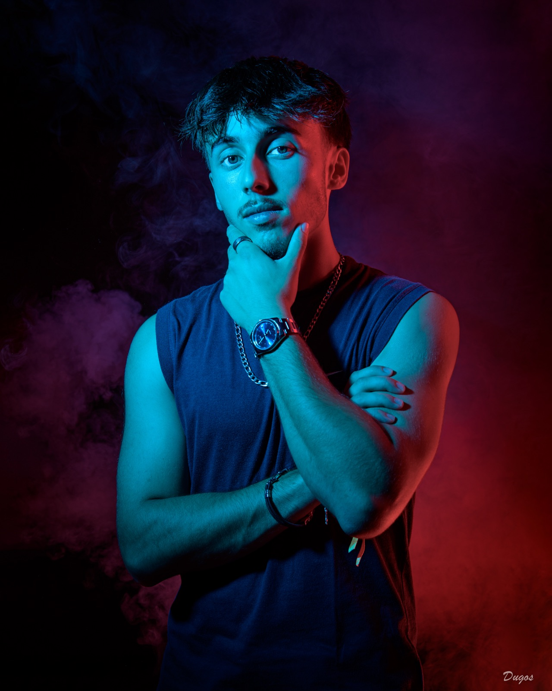
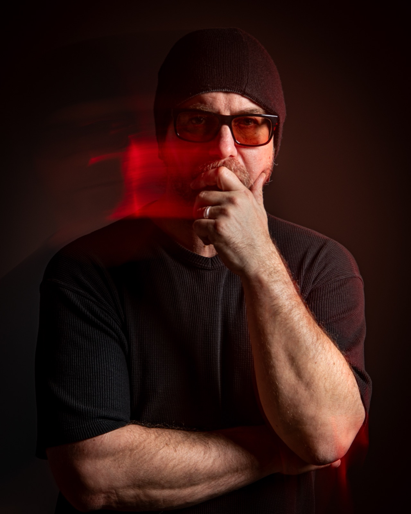
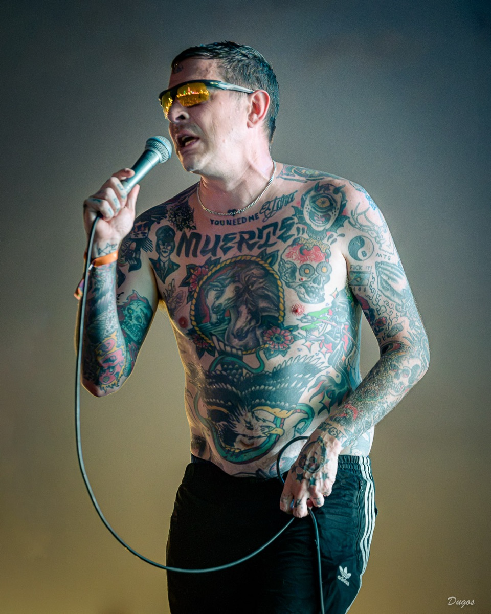
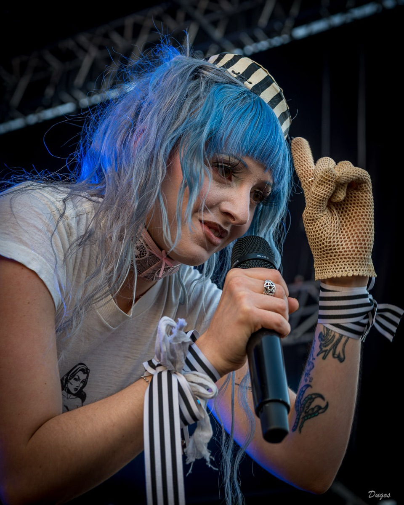
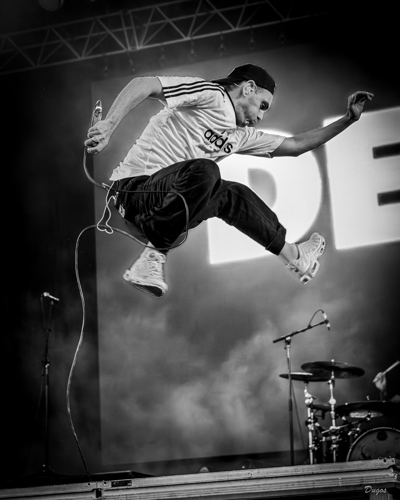
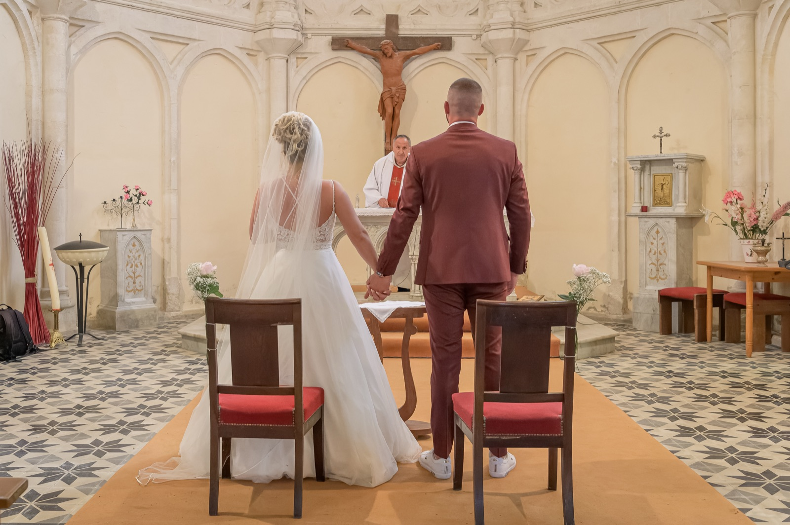

« L'expression
d'un visage, l'émotion
d'un instant. »



Tout a commencé avec un reflex numérique et la découverte du mode manuel : la possibilité de maîtriser entièrement l'image. Autodidacte, je pratique la photographie professionnellement depuis 2021, principalement autour des mariages, des portraits et des concerts.
Basé à Caumont-sur-Garonne, au cœur du Lot-et-Garonne, j'interviens dans tout le département et le Sud-Gironde.
« Osez franchir le cap d'un passage devant mon objectif. Mais attention, vous pourriez y prendre goût ! »
- La musique, d'abord : guitariste et chanteur pendant vingt ans dans différents groupes rock.
- Aujourd'hui de l'autre côté de la scène, appareil photo en main.
- Accrédité photo au festival Garorock, où j'ai vécu un festival au plus près des artistes.
- Un style en trois mots : spontané, naturel, créatif.
- Une conviction : plus l'atmosphère est détendue, meilleures sont les photos.




Authenticité
Pas de mise en scène forcée : c'est l'expression du sujet et l'émotion qui s'en dégage qui guident mon regard.
Empathie
Au-delà de la technique, l'écoute et la relation. Se sentir à l'aise devant l'objectif, ça change tout.
Fierté
Mon objectif : que chacun soit fier de l'image qu'il renvoie.
On échange.
Avant toute séance, on prend le temps de discuter des attentes de chacun et de faire connaissance.
On se met à l'aise.
Pas de poses rigides : on crée une ambiance, une relation. Plus l'atmosphère est détendue, meilleures sont les photos.
On immortalise.
Des images spontanées, naturelles et créatives. Des photos dont vous serez fiers.